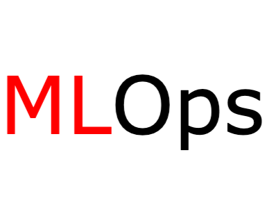

I build AI
Here are my Projects
AnimalVision-DirectML
The Animal Image Classification Project leverages PyTorch for its deep learning framework, utilizing the DirectML backend to optimize performance across various hardware AMD Devices. This project aims to accurately classify images of different animal species using a ResNet50 Model. This project serves as an excellent example using AMD devices for deep learning purpose, dedicated to Windows users.
TryMLEasy
A Python Web App, frontend made with Streamlit, which allows easy implementation of ML models and techniques on user dataset with GUI and no coding.A Python Web App, frontend made with Streamlit, which allows easy implementation of ML models and techniques on user dataset with GUI and no coding.
Skills and Tech Stack
- Machine Learning & AI: Crafting intelligent systems.
- Data Analysis & Visualization: Turning data into insights.
- Deep Learning & Generative AI: Pushing the boundaries of AI.
-
 Python
Python  AI/ML
AI/ML Computer Vision
Computer Vision Generative AI
Generative AI- MLOps
 GCP/Azure Cloud
GCP/Azure Cloud Research & Development
Research & Development Natural Language Processing
Natural Language Processing- Adobe Photoshop & Illustrator
Certificates
Building Generative AI Skills for Developer
Learning about new AI tools and frameworks that empower developers to build faster and more easily, and with the power of AI.
Machine Learning Engineer Learning Path
Set of 14 on-demand courses, labs, and skill badges that provide real-world, hands-on experience of using Google Cloud technologies essential to the ML Engineer role
Natural Language Processing with Probabilistic Models
Set of 14 on-demand courses, labs, and skill badges that provide real-world, hands-on experience of using Google Cloud technologies essential to the ML Engineer role
Natural Language Processing with Classification and Vector Spaces
Set of 14 on-demand courses, labs, and skill badges that provide real-world, hands-on experience of using Google Cloud technologies essential to the ML Engineer role
Data Structures and Algorithms
[ GeeksforGeeks ]
Set of 14 on-demand courses, labs, and skill badges that provide real-world, hands-on experience of using Google Cloud technologies essential to the ML Engineer role
Medium Articles
Publications

CNN-FastText Multi-Input (CFMI) Neural Networks for Social Media Clickbait Classification
[ DOI: 10.2174/0126662558283914231221065437 ]
[ Published on : 25 January, 2024 ]
[ Authors : Chirag Sharma, Gurneet Singh, Pratibha Singh Muttum and Shubham Mahajan ]
The article discusses a new method called CNN-FastText Multi-Input (CFMI) Neural Networks designed to identify clickbait in social media content. This approach combines a convolutional model with various video metadata to improve accuracy in detecting misleading content